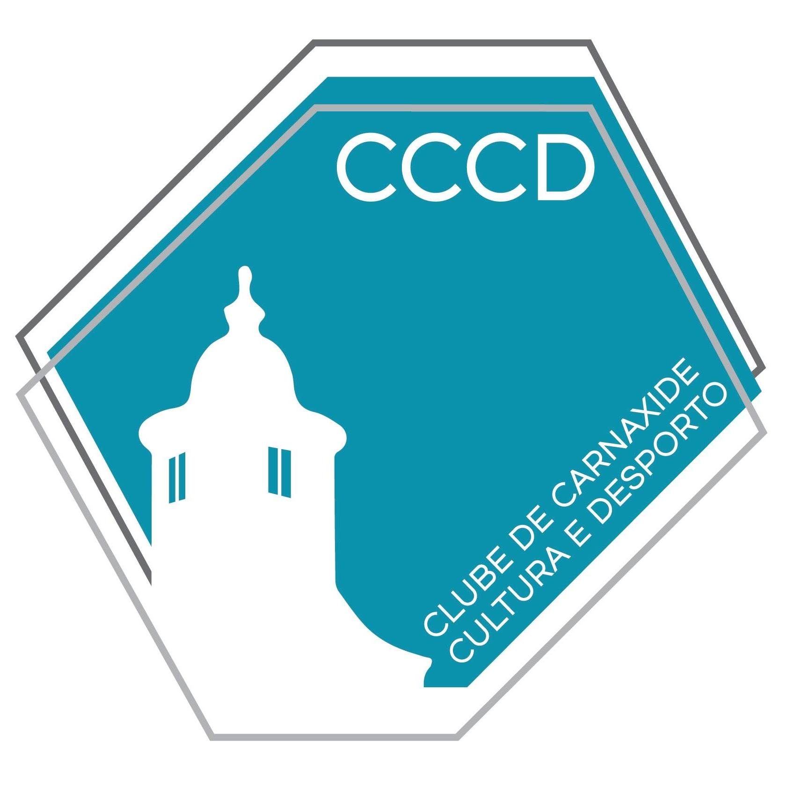
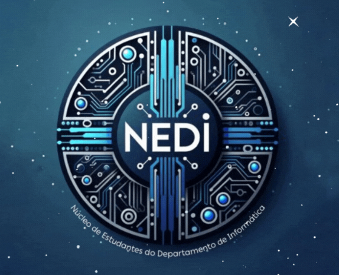

André Cunha
Full Stack Developer
Open to Backend / Full Stack / DevOps / Cloud Roles
Computer Engineering graduate with hands-on full-stack experience, building backend REST APIs in Golang and Java, relational databases, and React/Next.js frontends, demonstrated by architecting and shipping NVOZES, an end-to-end platform, from scratch. Particularly drawn to backend engineering and DevOps, containerizing services with Docker, automating deployments via GitHub Actions, and adopting Infrastructure as Code with Terraform. Currently expanding into MLOps and LLM integration, eager to apply all these skills in an internship or junior role. Highly motivated by continuous learning, comfortable digging into unfamiliar tools, and driven to solve complex engineering problems.
Skills
Programming Languages
Other Technical Skills
Soft Skills
Work Experience

Fitness Instructor
2020 - PresentClube de Carnaxide Cultura e Desporto · Lisbon, Portugal
- Managed fitness floor operations autonomously, tailoring training programs for hundreds of clients.
- Built strong client relationships through communication and motivation strategies, developing informal leadership skills along the way.

Member
Sep 2025 - Jul 2026NEDI - Informatics Department Student Branch · Lisbon, Portugal
- Assisted in organizing and operationalizing major academic events (JobShop, TecWeb, and DeisiFest), bridging the gap between students and the tech job market.
- Collaborated within a multidisciplinary team to manage logistics and ensure the success of community initiatives in Computer Engineering and Information Systems.
Education
BSc in Computer Engineering
Sep 2023 - Jul 2026Universidade Lusófona de Lisboa · Lisbon, Portugal
IPICS25 - Intensive Programme on Information and Communication Security
Jul 2025CyberSecPro · Novi Sad, Serbia
Projects
NVOZES - Final Degree Project
Sep 2025 - Jul 2026Full Stack Developer
- Planned, architected, and fully developed an end-to-end digital platform designed to connect young entrepreneurs from CPLP countries with partner and investor networks.
- Developed a backend REST API using Golang and PostgreSQL.
- Created two independent, responsive frontends (an institutional portal and an authenticated user dashboard) using React and Next.js.
- Implemented automated CI/CD pipelines via GitHub Actions and fully containerized the infrastructure using Docker and Nginx.
Events and Conferences
Bridging young talent with the future of Banking and IT - Seminar
May 2026Speaker · Participant · Universidade Lusófona, Lisbon, Portugal